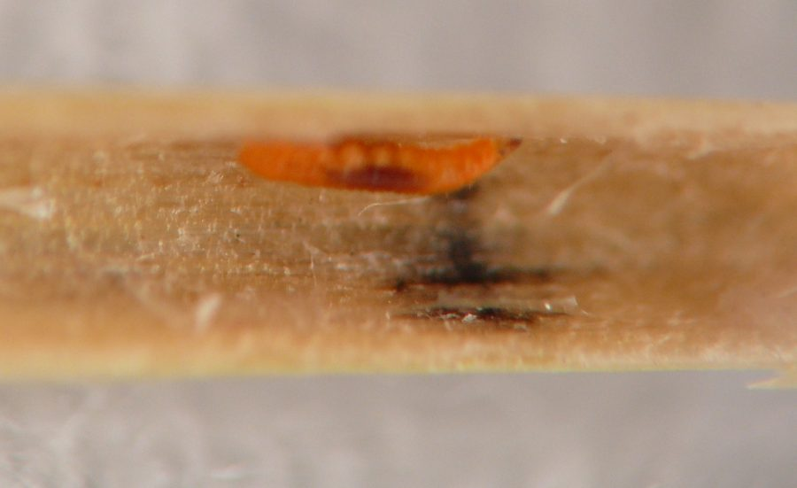
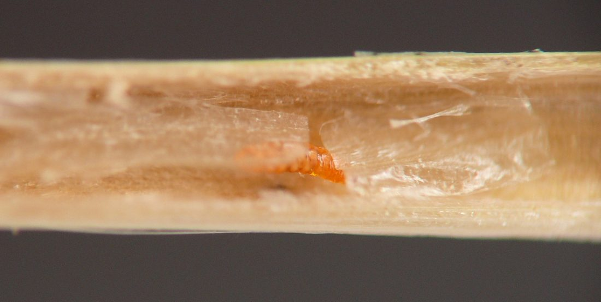
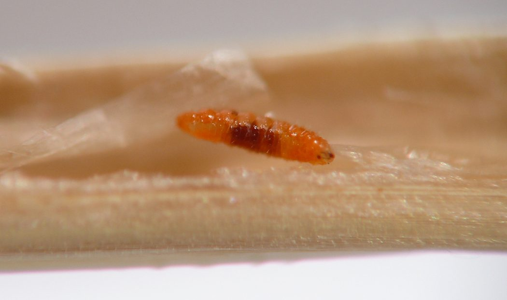
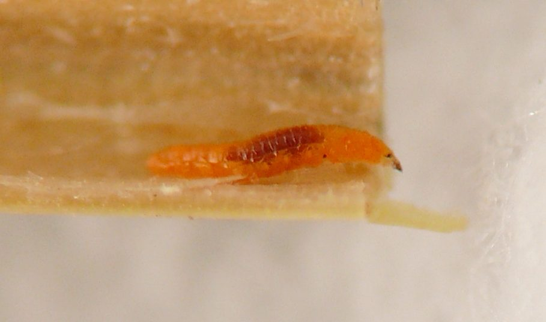
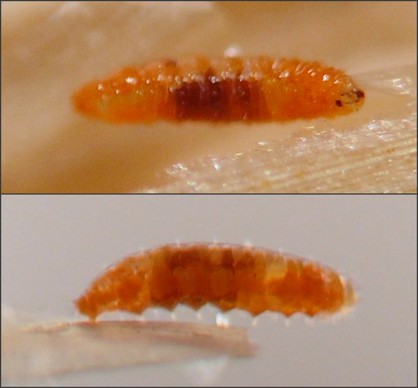
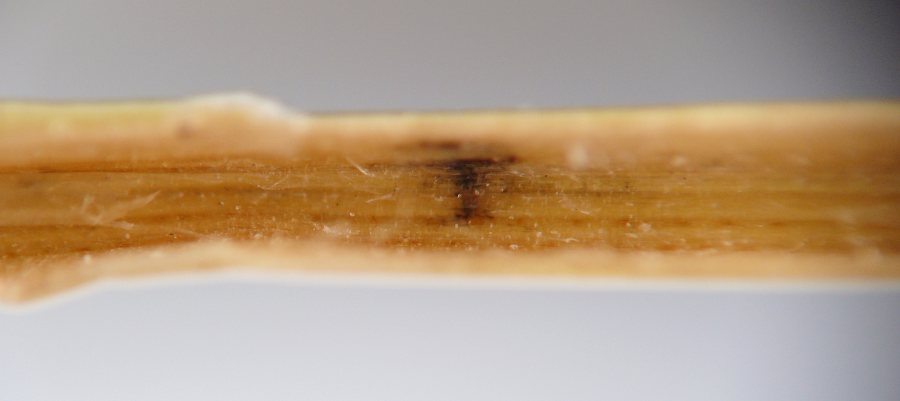
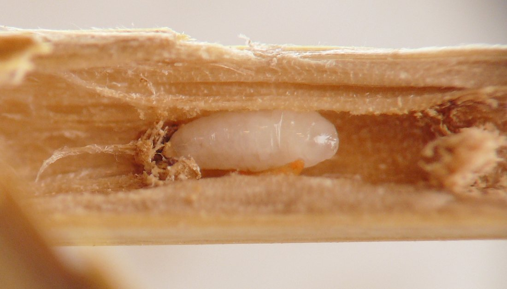

Local feeder (Diptera: Cecidomyiidae) in stems of Dactylis
| Record no.: | 0781 |
|---|---|
| Feeding guild: | Local feeder in stem |
| Taxonomy: | Diptera: Cecidomyiidae |
| Stages observed: | trace, larva |
| Distribution observed: | IA |
| Hosts in Dactylis: | D. glomerata (orchard grass) |
When examining the interiors of Dactylis culms in search of eurytomid larvae (record 0758), I encountered two or three of these orange cecidomyiid larvae, who occurred singly in the culms. In one case, the larva was positioned near a small patch of black fungal tissue on the inner wall of the culm, and the larva’s gut contents were very dark, leading me to wonder if the larva had been feeding on the fungus (images 781-01 through 781-06). Of a second larva, shown in images 781-07 through 781-09, I wrote: "The cecidomyiid larva was originally located very close to the eurytomid larva when I split open the stem, and by the time I got to photographing it the larva was actually crawling on the eurytomid larva! Whatever they are, these cecidomyiid larvae [in Dactylis culms] are good crawlers."
I list this record in the survey tentatively, since I was unable to establish with certainty that the larvae were feeding on plant or fungal tissue. The culm interiors also housed eurytomid larvae (as aforementioned) and eggs and egg debris of a much larger insect, possibly a hemipteran or orthopteran.

 Prev
Prev







{kind=link}
{kind=link}
{kind=link}
{kind=link}
{kind=link}
{kind=link}
{kind=link}

Page created: September 2, 2026. Last update: none